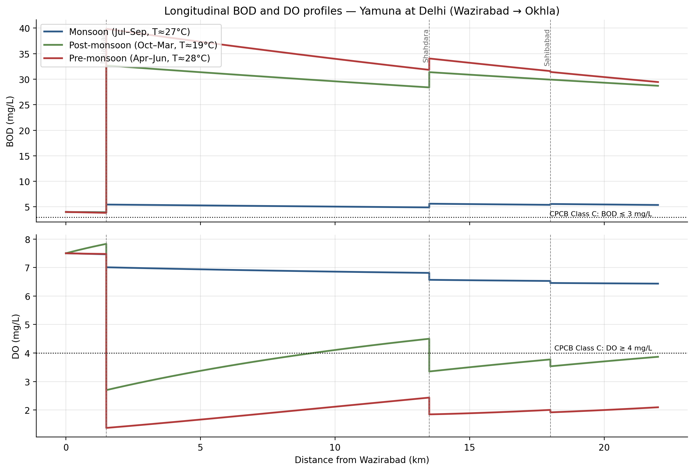
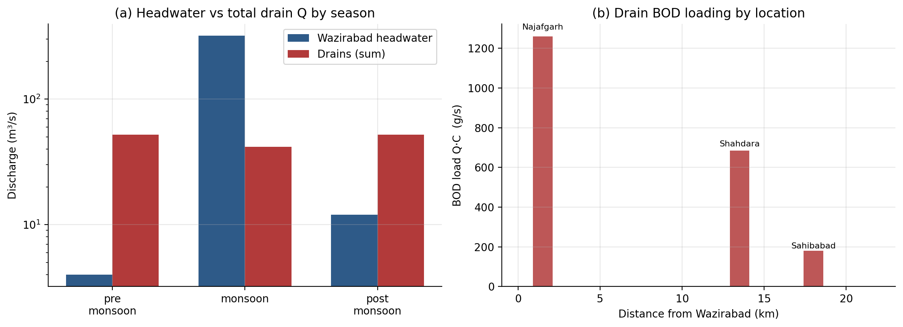
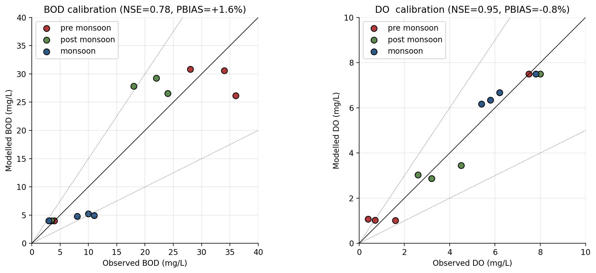
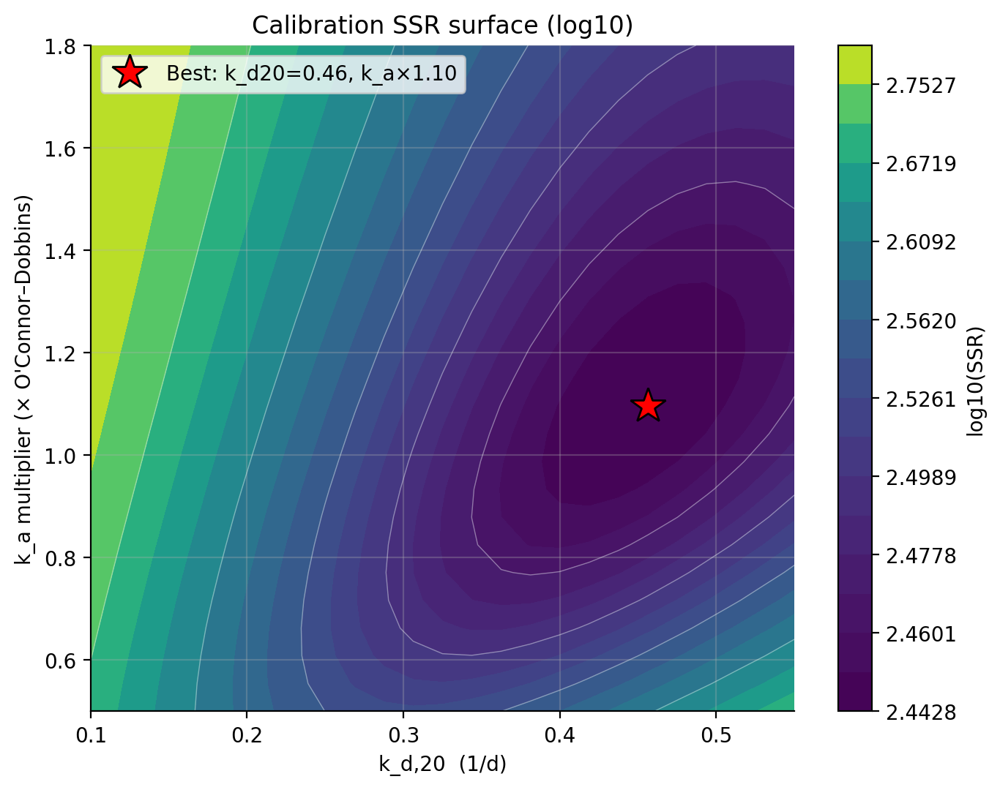
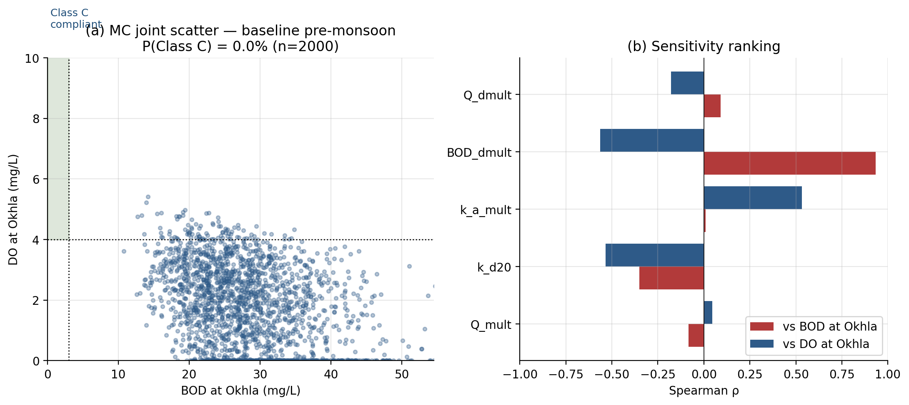
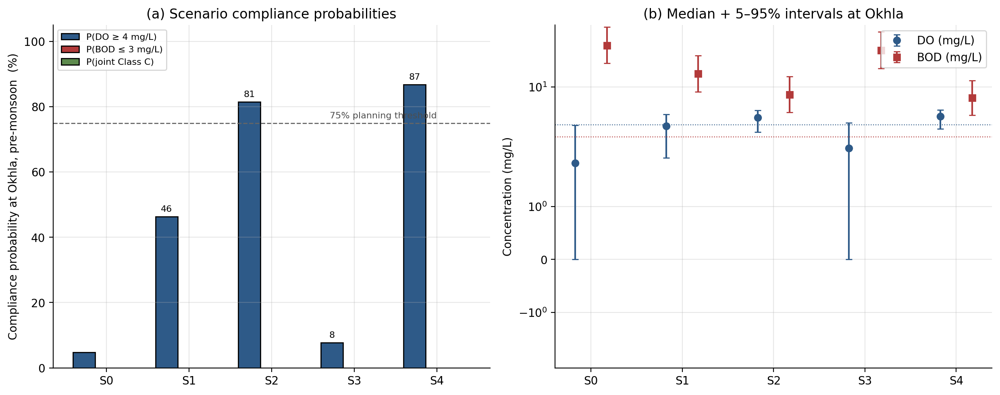

The question
Which combination of source treatment, drain interception and managed environmental flow can move the dry-season Yamuna at Delhi toward CPCB Class C compliance — and which of the two Class C standards (DO ≥ 4 mg/L, BOD ≤ 3 mg/L) is actually binding?
The 22 km Wazirabad → Okhla reach is one of the most-studied urban-river BOD–DO problems in South Asia. After upstream diversions the headwater flow drops to about 4 m³/s in the dry season, while the Najafgarh, Shahdara and Sahibabad drains collectively inject roughly 52 m³/s of high-BOD wastewater along the reach. CPCB monitors four stations along the reach monthly. The case study answers the question above as a screening-level analysis whose purpose is to inform whether a higher-complexity tool (QUAL2K, WASP) is justified before committing to capital investment.
Headline results
Management insight
- Binding constraint: BOD, not DO. Joint Class C is effectively unreachable on this reach under the tested scenarios in the dry season.
- Best near-term lever: drain treatment / STP upgrade. P(DO ≥ 4) rises from 4.8% to 81.5% at ~70% drain BOD removal alone.
- Weak standalone lever: environmental-flow augmentation. ×3 Wazirabad release alone only moves P(DO ≥ 4) to ~8% — dry-season Qhead is an order of magnitude smaller than the combined drain inflow.
Methodology
A 1D steady-state Streeter–Phelps model of the reach, with explicit drain-mixing at three confluences, calibrated against 2018–2022 monthly medians at four CPCB stations (Palla, Nizamuddin, ITO Bridge, Okhla). Parameter and forcing uncertainty are propagated through a 2000-run Latin Hypercube Monte Carlo, and the outputs are translated into compliance probabilities for the two CPCB Class C standards.
Governing equations
Temperature corrections: kd(T) = kd,20·1.047(T−20); ka(T) = ka,20·1.024(T−20). Full equation set in the methods appendix.
Calibration
Pre- and post-monsoon BOD/DO are used in calibration; monsoon medians are held back as a validation case. The calibration is “Very Good” under Moriasi et al. (2007) at all four stations. Best-fit values from the 25×25 SSR grid: kd,20 = 0.46 1/d, ka multiplier = 1.10 (× O’Connor–Dobbins). On the four-station monsoon hold-out the model achieves a MAPE of ~9% for DO and ~44% for BOD — the DO hold-out is a genuine validation result; the BOD error is reported honestly because the steady-state model does not represent in-channel BOD storage or barrage-impoundment dynamics.
Uncertainty propagation
Five uncertain inputs are sampled by Latin Hypercube (2000 runs):
| Parameter | Distribution | Range / parameters | Source |
|---|---|---|---|
| Headwater Q (multiplier) | Lognormal | σ = 0.35 | CWC vs. CPCB Wazirabad release variance |
| kd,20 | Uniform | 0.20–0.55 1/d | Chapra 1997 urban-stream range, widened to bracket the calibrated optimum |
| ka (multiplier) | Uniform | 0.7–1.4 | Wraps O’Connor–Dobbins, Owens–Gibbs, Churchill alternatives |
| Drain BOD (multiplier) | Lognormal | σ = 0.25 | CPCB drain-grab variability around reach medians |
| Drain Q (multiplier) | Triangular | min 0.6, mode 1.0, max 1.3 | Diurnal + operational variability |
Spearman rank correlations identify the drain BOD multiplier as the dominant uncertainty driver (ρ = +0.93 vs Okhla BOD): source-strength uncertainty dominates over kinetic uncertainty in the dry-season regime. Headwater Q sensitivity is essentially decoupled (|ρ| < 0.1).
Scenarios at Okhla (pre-monsoon)
| Scenario | Description | Median BOD (mg/L) |
Median DO (mg/L) |
P(DO≥4) | P(BOD≤3) | P(joint) |
|---|---|---|---|---|---|---|
| S0 | Baseline (current operations) | 27.4 | 1.82 | 4.8% | 0% | 0% |
| S1 | Drain interception + STP retrofit (η ≈ 50%) | 13.8 | 3.91 | 46.4% | 0% | 0% |
| S2 | Aggressive STP upgrade (η ≈ 70%) | 8.3 | 4.77 | 81.5% | 0% | 0% |
| S3 | E-flow release at Wazirabad (×3) | 24.3 | 2.29 | 7.8% | 0% | 0% |
| S4 | S2 + S3 combined | 7.7 | 4.91 | 86.9% | 0% | 0% |
Median values are run-medians of the 2000-run Latin Hypercube Monte Carlo. P(DO ≥ 4) and P(BOD ≤ 3) are the marginal compliance probabilities; P(joint) is the probability of meeting both standards simultaneously. The marginals are shown separately so the binding standard (BOD) is visible scenario by scenario.
Key findings
Finding 1 — BOD compliance is effectively unreachable in the dry season
Even the combined scenario (S4: ~70% drain treatment plus a tripled Wazirabad release) leaves median Okhla BOD at about 7.7 mg/L, and the BOD-marginal compliance probability is below 1% across all five scenarios. Reaching 3 mg/L would likely require above 90% drain BOD removal, which is not credible at the combined loading scale of Najafgarh, Shahdara and Sahibabad without effectively diverting the entire dry-season municipal load.
Finding 2 — DO compliance is reachable, and the route is drain treatment
P(DO ≥ 4) at Okhla rises from 4.8% under the baseline to 81.5% under S2 (aggressive STP upgrade alone) and to 86.9% under S4 (S2 plus a tripled Wazirabad release). The flow-augmentation scenario alone (S3) only moves the probability to 7.8%. The reason BOD remains binding while DO improves is mechanical: DO has a second recovery route through reaeration, whereas BOD is purely load-driven and only responds to source removal.
Finding 3 — Drain BOD is the dominant uncertainty driver
Spearman rank correlations identify the drain BOD multiplier as the dominant driver of Okhla BOD (ρ = +0.93) and a major driver of Okhla DO (ρ = −0.56). Headwater Q is decoupled from the output under current dry-season operations (|ρ| < 0.1). Investment that reduces drain BOD will move Okhla BOD almost one-for-one in this regime; investment in any other lever will not.
Figures






A seventh figure (illustrative un-ionised NH3 screening) is in the notebook only and is not part of the calibrated model.
Scope and limitations
This is a screening-level, public-data case study built on a steady-state 1D representation. It does not resolve diurnal DO swings, sediment oxygen demand, nitrification kinetics, or the slack-water reservoirs above each barrage where eutrophic algal cycles dominate the DO budget. Drain BOD and Q are treated as time-invariant within each season; in reality both have a diurnal and a stormwater signature. Headwater Q is the most contestable input — CWC and CPCB report different dry-season Wazirabad release figures — but not a high-leverage input on this reach: the Spearman ranking shows |ρ| < 0.1 for headwater Q against Okhla BOD, because dry-season Qhead is an order of magnitude smaller than the combined drain inflow. The model is intended for dry-season planning and should not be used to infer monsoon BOD compliance quantitatively without a storage-aware dynamic model.
Reproducibility
Everything here is built from public data (CPCB Yamuna Action Plan reports, CWC Old Railway Bridge gauge records, CPCB station medians 2018–2022). End-to-end runtime on a laptop is ~60 seconds. Full source on GitHub.
git clone https://github.com/venkatnsn/yamuna-delhi-bod-do-case-study.git cd yamuna-delhi-bod-do-case-study pip install numpy pandas scipy matplotlib jupyter nbformat jupyter notebook notebook/Yamuna_BODDO_Analysis.ipynb
To regenerate the case study and methods appendix, the build chain (Node-based DOCX builders + docx2pdf) is documented in the repository README.md.
Key references
- Chapra, S.C. (1997). Surface Water-Quality Modeling. McGraw-Hill, New York.
- CPCB (2021). Yamuna Water Quality Status Report 2018–2020. Central Pollution Control Board, New Delhi.
- Emerson, K., Russo, R.C., Lund, R.E., Thurston, R.V. (1975). Aqueous ammonia equilibrium calculations: effect of pH and temperature. J. Fish. Res. Bd. Canada 32: 2379–2383.
- McKay, M.D., Beckman, R.J., Conover, W.J. (1979). A comparison of three methods for selecting values of input variables in the analysis of output from a computer code. Technometrics 21(2): 239–245.
- Moriasi, D.N., Arnold, J.G., Van Liew, M.W., et al. (2007). Model evaluation guidelines for systematic quantification of accuracy in watershed simulations. Trans. ASABE 50(3): 885–900.
- O’Connor, D.J., Dobbins, W.E. (1958). Mechanism of reaeration in natural streams. Trans. ASCE 123: 641–684.
- Streeter, H.W., Phelps, E.B. (1925). A Study of the Pollution and Natural Purification of the Ohio River. US Public Health Service Bulletin 146.